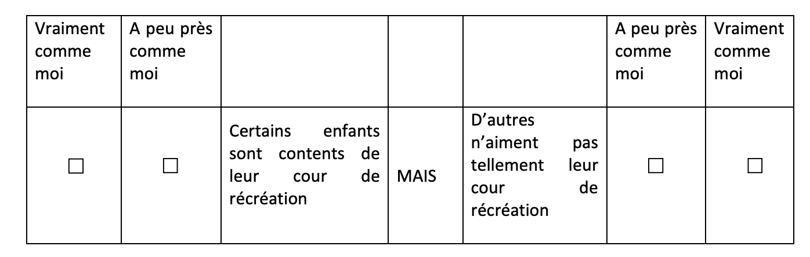

Code
library(lavaan)
library(tidySEM)
library(readxl)
library(knitr)library(lavaan)
library(tidySEM)
library(readxl)
library(knitr)Sentiment de sécurité mesurée par 5 items (ex : Certains enfants ont peur de se faire voler des affaires à l’école/au collège)
Rapport aux évaluations mesurée par 5 items,
Satisfaction classe mesurée par 5 items,

Les données sont ici
On a calculé les moyennes des items pour chaque variable impliquée dans le modèle ci-dessous.

On peut commencer par regarder la matrice de corrélations des variables impliquées dans le modèle :
df=read.csv("data_agreg.csv")
df<-na.omit(df[,-1])
library(psych)
kable(head(df))| RE | Sec | Eval | Cl | Math | SEP |
|---|---|---|---|---|---|
| 3.2 | 3.0 | 2.6 | 3.75 | 5 | 5.285714 |
| 2.8 | 2.4 | 2.8 | 3.50 | 5 | 5.000000 |
| 3.0 | 3.4 | 2.2 | 4.00 | 5 | 4.857143 |
| 2.8 | 3.0 | 1.8 | 3.50 | 4 | 5.142857 |
| 3.8 | 3.4 | 2.0 | 3.00 | 5 | 5.428571 |
| 3.4 | 2.0 | 1.4 | 3.50 | 1 | 5.571429 |
corrplot::corrplot(cor(df[,c("Math","SEP","RE","Sec","Eval","Cl")]),type="upper", method="number")
model<-'
SEP~ a*RE
Math~ c*RE + b*SEP+Eval
RE~Sec+Cl
Eval~~Sec
Eval~~Cl
Cl~~Sec
I:=a*b
T:=a*b+c
'
fit<-sem(model,data=df,fixed.x=FALSE)
summary(fit,standardized=T)lavaan 0.6.16 ended normally after 19 iterations
Estimator ML
Optimization method NLMINB
Number of model parameters 15
Number of observations 288
Model Test User Model:
Test statistic 46.890
Degrees of freedom 6
P-value (Chi-square) 0.000
Parameter Estimates:
Standard errors Standard
Information Expected
Information saturated (h1) model Structured
Regressions:
Estimate Std.Err z-value P(>|z|) Std.lv Std.all
SEP ~
RE (a) 0.709 0.074 9.649 0.000 0.709 0.494
Math ~
RE (c) 0.060 0.119 0.503 0.615 0.060 0.032
SEP (b) 0.442 0.082 5.372 0.000 0.442 0.336
Eval 0.255 0.098 2.614 0.009 0.255 0.143
RE ~
Sec 0.179 0.054 3.328 0.001 0.179 0.169
Cl 0.455 0.049 9.336 0.000 0.455 0.474
Covariances:
Estimate Std.Err z-value P(>|z|) Std.lv Std.all
Eval ~~
Sec 0.214 0.028 7.712 0.000 0.214 0.510
Cl 0.018 0.027 0.669 0.504 0.018 0.039
Sec ~~
Cl 0.016 0.024 0.657 0.511 0.016 0.039
Variances:
Estimate Std.Err z-value P(>|z|) Std.lv Std.all
.SEP 0.652 0.054 12.000 0.000 0.652 0.756
.Math 1.270 0.106 12.000 0.000 1.270 0.850
.RE 0.310 0.026 12.000 0.000 0.310 0.741
Eval 0.469 0.039 12.000 0.000 0.469 1.000
Sec 0.374 0.031 12.000 0.000 0.374 1.000
Cl 0.455 0.038 12.000 0.000 0.455 1.000
Defined Parameters:
Estimate Std.Err z-value P(>|z|) Std.lv Std.all
I 0.313 0.067 4.693 0.000 0.313 0.166
T 0.373 0.108 3.449 0.001 0.373 0.197df=read.csv("data.csv")
model<-'
SEP=~SEP1+SEP2+SEP3+SEP4+SEP5
RE=~RE1+RE2+RE3+RE4+RE5
Eval=~Eval1+Eval2+Eval3+Eval4+Eval5
Cl=~Cl1+Cl2+Cl3+Cl4
Sec=~Sec1+Sec2+Sec3+Sec4+Sec5
SEP~ a*RE
Math~ c*RE + b*SEP+Eval
RE~Sec+Cl
Eval~~Sec
Eval~~Cl
Cl~~Sec
I:=a*b
T:=a*b+c
'
fit<-sem(model,data=df,fixed.x=FALSE,estimator="MLR")
summary(fit,standardized=T,fit.measures=T)lavaan 0.6.16 ended normally after 45 iterations
Estimator ML
Optimization method NLMINB
Number of model parameters 58
Used Total
Number of observations 289 295
Model Test User Model:
Standard Scaled
Test Statistic 757.307 699.438
Degrees of freedom 267 267
P-value (Chi-square) 0.000 0.000
Scaling correction factor 1.083
Yuan-Bentler correction (Mplus variant)
Model Test Baseline Model:
Test statistic 2440.553 2165.899
Degrees of freedom 300 300
P-value 0.000 0.000
Scaling correction factor 1.127
User Model versus Baseline Model:
Comparative Fit Index (CFI) 0.771 0.768
Tucker-Lewis Index (TLI) 0.743 0.740
Robust Comparative Fit Index (CFI) 0.777
Robust Tucker-Lewis Index (TLI) 0.750
Loglikelihood and Information Criteria:
Loglikelihood user model (H0) -9412.915 -9412.915
Scaling correction factor 1.226
for the MLR correction
Loglikelihood unrestricted model (H1) -9034.262 -9034.262
Scaling correction factor 1.108
for the MLR correction
Akaike (AIC) 18941.830 18941.830
Bayesian (BIC) 19154.483 19154.483
Sample-size adjusted Bayesian (SABIC) 18970.556 18970.556
Root Mean Square Error of Approximation:
RMSEA 0.080 0.075
90 Percent confidence interval - lower 0.073 0.068
90 Percent confidence interval - upper 0.086 0.081
P-value H_0: RMSEA <= 0.050 0.000 0.000
P-value H_0: RMSEA >= 0.080 0.479 0.099
Robust RMSEA 0.078
90 Percent confidence interval - lower 0.071
90 Percent confidence interval - upper 0.085
P-value H_0: Robust RMSEA <= 0.050 0.000
P-value H_0: Robust RMSEA >= 0.080 0.318
Standardized Root Mean Square Residual:
SRMR 0.096 0.096
Parameter Estimates:
Standard errors Sandwich
Information bread Observed
Observed information based on Hessian
Latent Variables:
Estimate Std.Err z-value P(>|z|) Std.lv Std.all
SEP =~
SEP1 1.000 0.543 0.546
SEP2 1.586 0.308 5.141 0.000 0.861 0.701
SEP3 1.902 0.342 5.563 0.000 1.033 0.767
SEP4 1.385 0.384 3.609 0.000 0.752 0.550
SEP5 1.711 0.362 4.724 0.000 0.929 0.660
RE =~
RE1 1.000 0.687 0.744
RE2 0.954 0.088 10.832 0.000 0.655 0.668
RE3 0.843 0.103 8.226 0.000 0.579 0.580
RE4 0.787 0.095 8.257 0.000 0.541 0.609
RE5 0.425 0.102 4.181 0.000 0.292 0.309
Eval =~
Eval1 1.000 0.515 0.507
Eval2 0.963 0.168 5.742 0.000 0.495 0.540
Eval3 1.157 0.153 7.551 0.000 0.595 0.598
Eval4 1.171 0.176 6.639 0.000 0.603 0.565
Eval5 1.352 0.172 7.859 0.000 0.696 0.694
Cl =~
Cl1 1.000 0.749 0.771
Cl2 1.125 0.074 15.221 0.000 0.843 0.855
Cl3 0.549 0.106 5.200 0.000 0.411 0.490
Cl4 0.401 0.110 3.646 0.000 0.301 0.328
Sec =~
Sec1 1.000 0.551 0.538
Sec2 0.592 0.107 5.556 0.000 0.326 0.481
Sec3 0.879 0.124 7.066 0.000 0.484 0.610
Sec4 1.108 0.156 7.092 0.000 0.610 0.667
Sec5 1.199 0.151 7.929 0.000 0.660 0.716
Regressions:
Estimate Std.Err z-value P(>|z|) Std.lv Std.all
SEP ~
RE (a) 0.514 0.085 6.052 0.000 0.651 0.651
Math ~
RE (c) -0.064 0.215 -0.299 0.765 -0.044 -0.036
SEP (b) 0.727 0.300 2.421 0.015 0.395 0.321
Eval 0.576 0.210 2.741 0.006 0.296 0.241
RE ~
Sec 0.364 0.117 3.110 0.002 0.292 0.292
Cl 0.405 0.103 3.929 0.000 0.442 0.442
Covariances:
Estimate Std.Err z-value P(>|z|) Std.lv Std.all
Eval ~~
Sec 0.203 0.036 5.599 0.000 0.717 0.717
Cl 0.011 0.035 0.322 0.747 0.029 0.029
Cl ~~
Sec 0.034 0.032 1.074 0.283 0.082 0.082
Variances:
Estimate Std.Err z-value P(>|z|) Std.lv Std.all
.SEP1 0.694 0.082 8.507 0.000 0.694 0.702
.SEP2 0.768 0.198 3.884 0.000 0.768 0.509
.SEP3 0.747 0.242 3.090 0.002 0.747 0.412
.SEP4 1.301 0.269 4.829 0.000 1.301 0.697
.SEP5 1.115 0.260 4.284 0.000 1.115 0.564
.RE1 0.380 0.046 8.174 0.000 0.380 0.446
.RE2 0.532 0.058 9.244 0.000 0.532 0.554
.RE3 0.661 0.073 8.999 0.000 0.661 0.663
.RE4 0.495 0.057 8.624 0.000 0.495 0.629
.RE5 0.808 0.059 13.744 0.000 0.808 0.905
.Eval1 0.764 0.069 11.139 0.000 0.764 0.743
.Eval2 0.596 0.065 9.130 0.000 0.596 0.708
.Eval3 0.637 0.061 10.425 0.000 0.637 0.643
.Eval4 0.773 0.077 10.013 0.000 0.773 0.680
.Eval5 0.522 0.058 9.071 0.000 0.522 0.519
.Cl1 0.383 0.060 6.378 0.000 0.383 0.405
.Cl2 0.262 0.085 3.098 0.002 0.262 0.269
.Cl3 0.537 0.054 10.018 0.000 0.537 0.760
.Cl4 0.752 0.064 11.834 0.000 0.752 0.893
.Sec1 0.746 0.066 11.227 0.000 0.746 0.711
.Sec2 0.353 0.056 6.295 0.000 0.353 0.769
.Sec3 0.396 0.056 7.053 0.000 0.396 0.628
.Sec4 0.465 0.066 7.065 0.000 0.465 0.555
.Sec5 0.415 0.058 7.196 0.000 0.415 0.488
.Math 1.258 0.124 10.105 0.000 1.258 0.834
.SEP 0.170 0.048 3.554 0.000 0.577 0.577
.RE 0.329 0.060 5.494 0.000 0.698 0.698
Eval 0.265 0.060 4.441 0.000 1.000 1.000
Cl 0.562 0.075 7.456 0.000 1.000 1.000
Sec 0.303 0.066 4.584 0.000 1.000 1.000
Defined Parameters:
Estimate Std.Err z-value P(>|z|) Std.lv Std.all
I 0.374 0.172 2.170 0.030 0.257 0.209
T 0.310 0.135 2.293 0.022 0.213 0.173